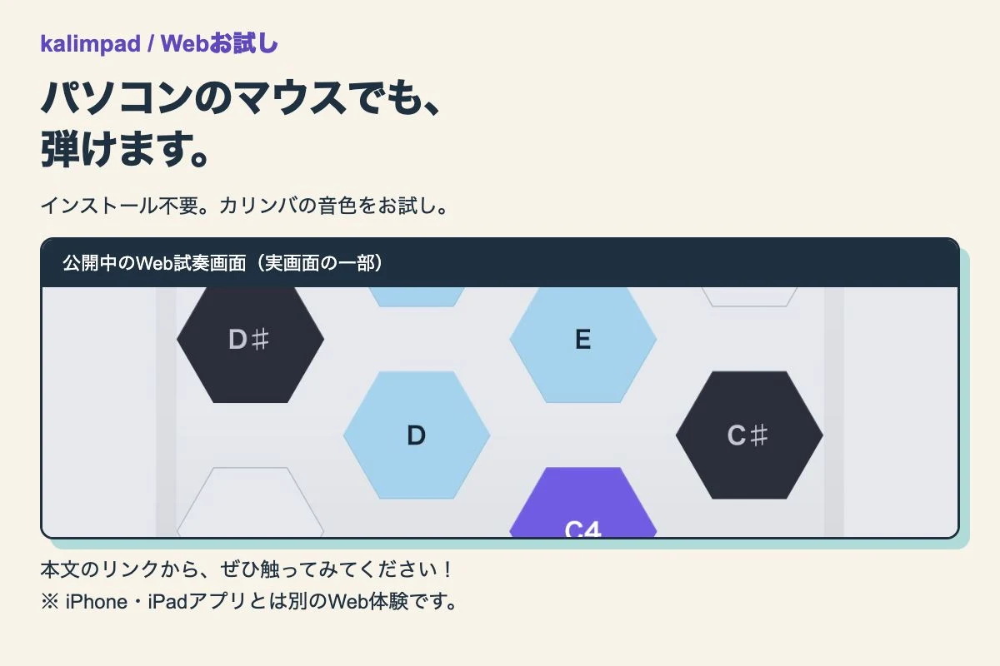

課題：画面を載せるだけで伝わるか。
kalimpadのWebお試しを、パソコンで初めて見る人へ案内する画像を作りました。Webの実画面を載せても、その人が「このマウスで試せる」と分かるかは別の確認です。制作するAIとは別のAIに、対象者・投稿文・画像を示してレビューを依頼しました。
AIへ渡した情報。
対象は、kalimpadをまだ知らないパソコンの閲覧者。行動案内はWebお試しのリンクを開くこと。Web版とiPhone・iPadアプリを混同させないことも条件にしました。文案だけでなく、書き出した画像そのものを確認対象にしました。
依頼文の例
この完成画像と投稿文を、初めて見るパソコン利用者の立場で確認してください。Webリンクからお試しへ進んでほしい企画です。自分のマウスで試せると分かる手がかりが画像にあるか、最初の問いを一つください。
これは今回の条件をもとに再構成した例です。実際の依頼文の逐語引用ではありません。
一つの問いを、修正へ戻す。
レビュー役からは、パソコンの閲覧者がマウスで今すぐ試せると気づく手がかりを、画像のどこに置くか、という問いが出ました。制作側は次の形で回答を画像へ反映しました。
- 実画面の外側に「パソコンのマウスでも、弾けます。」を大きく置く。
- 「インストール不要」とカリンバ音色のWebお試しであることを添える。
- 実画面は一部の抜粋と示し、iPhone・iPadアプリとは別のWeb体験と注記する。
修正後は、レビュー役が完成画像と投稿条件を再確認しました。問いへの文章回答だけで確認を終えず、修正した実物へ戻しています。


確認できたこと、まだ分からないこと。
この回で確認したのは、見出し・注記・画像の読みやすさと、対象者への案内です。レビューで採用可となったことは、実際の閲覧者に伝わった証明ではありません。クリックや利用者の増加、他の表現に対する優位性は、このレビューだけでは判断できません。
利用者が決めたのは公開範囲と表現の方針です。この回の制作・修正・再確認はAIが実施しました。人による最終確認が行われたという記録はないため、人が目視で承認した事例としては扱いません。また、定型チェックのCLI出力と、別AIによる画像レビューは別の確認です。
自分の制作で試せる工夫。
提案として、完成画像に誰が見るか／何をしてほしいか／誤解させたくないことを添え、最初の問いを一つ求めてみてください。答えを画像へ反映したら、その画像をもう一度渡します。AI同士の合意を効果の証明にせず、公開後の反応と分けて扱うことも大切です。